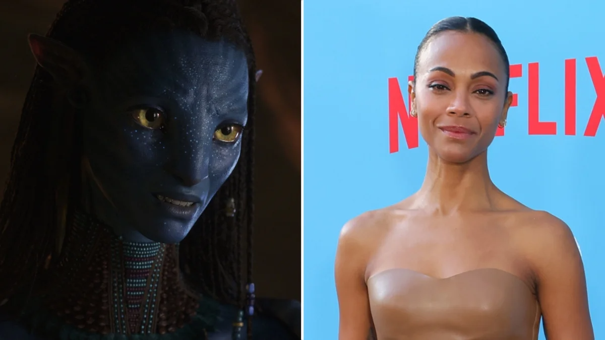
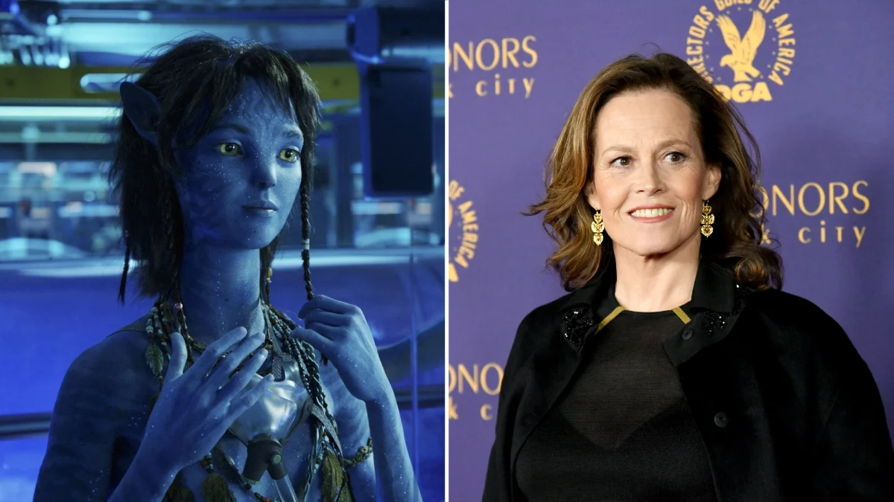
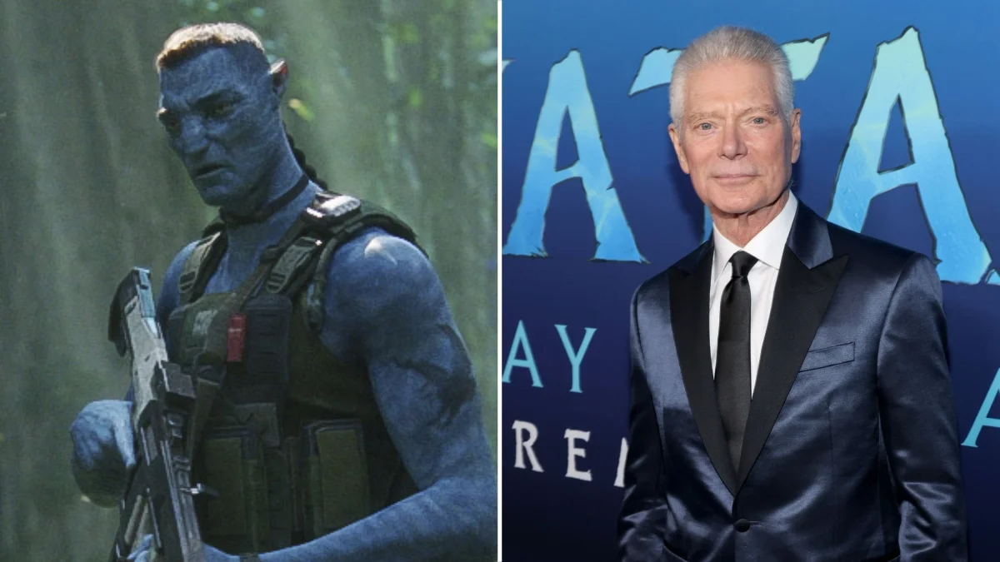
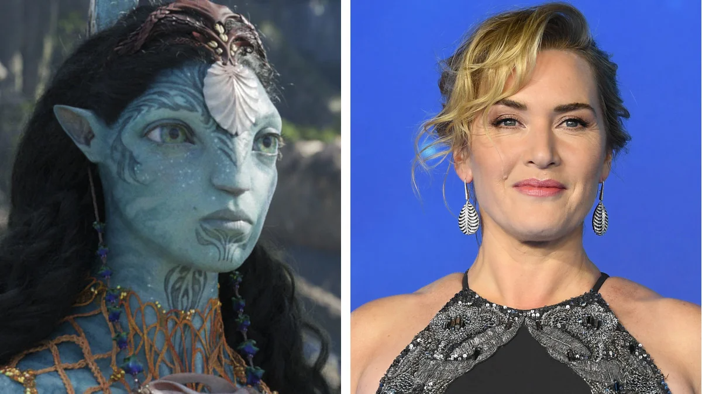
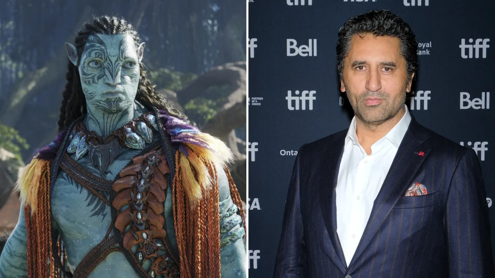
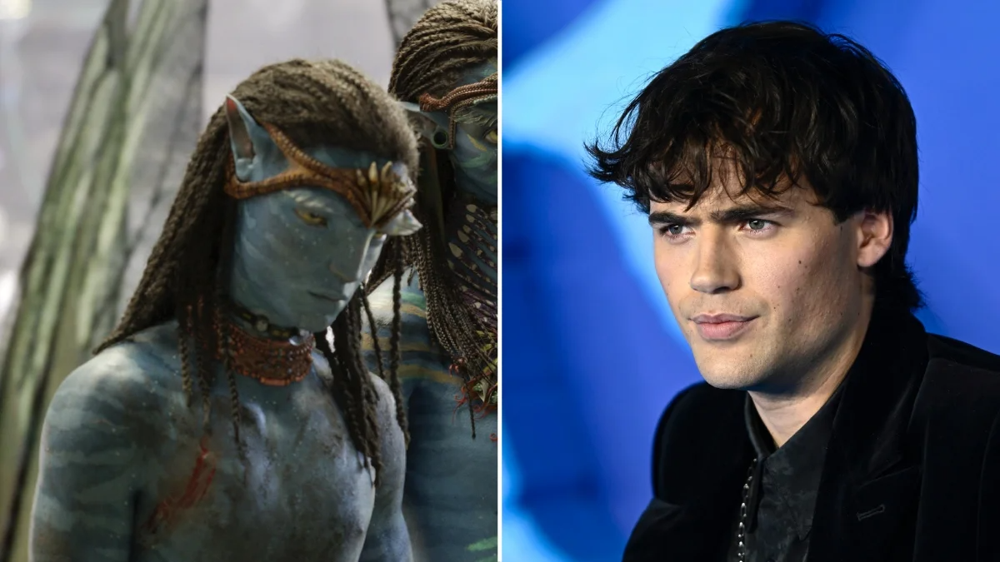
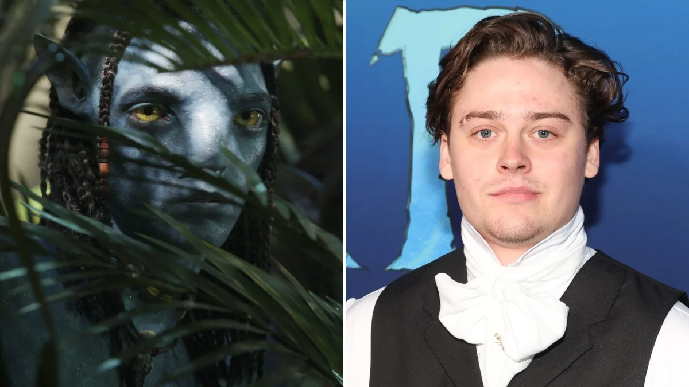
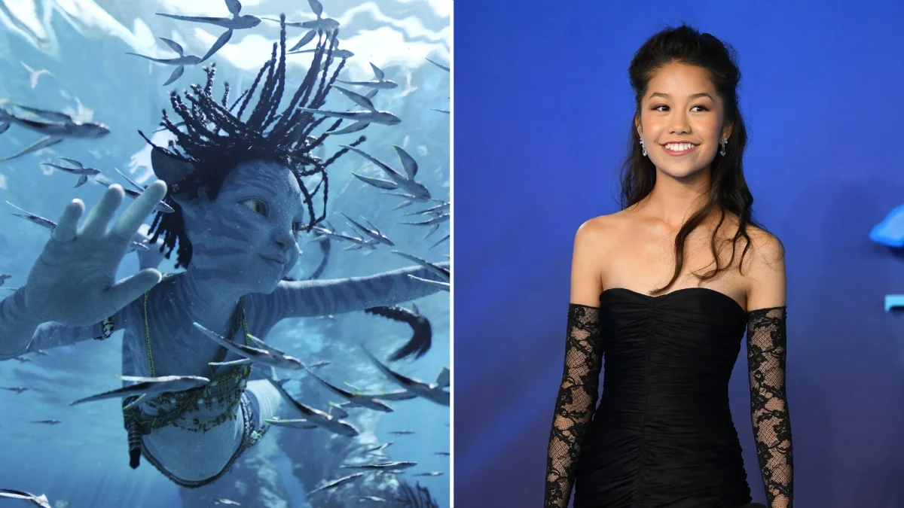
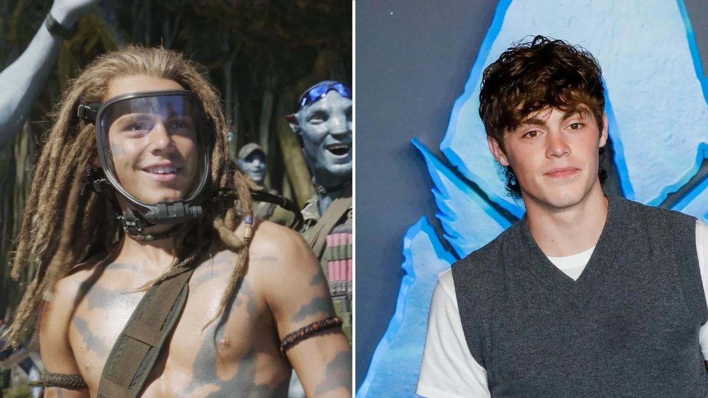
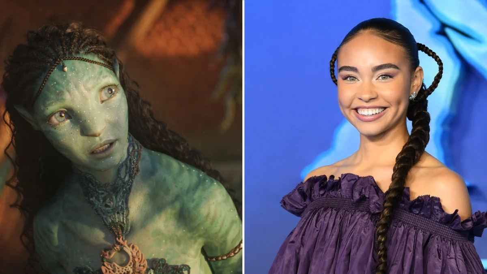

Sam Worthington reprises his role of disabled ex-marine turned forest-dwelling Na’vi Jake Sully,
only this time as a father of four — two sons and two daughters. Protecting his family defines
Jake now, as it does most fathers, but when the Sky People return to get revenge on their view of
an insurgent, Jake realizes he is also responsible for the forest nation that took him in, so he
makes some difficult decisions for their overall well-being and protection as well. Worthington is
known for roles like Marcus Wright in “Terminator: Salvation” (2009) Perseus in “Clash of the Titans,”
(2010) and James ‘Monster’ Murray in “Sabotage” (2014).

Neytiri is the Na’vi love of Jake’s life. The story of their relationship can be found in the first “Avatar” film,
in which Neytiri fell in love with Jake despite him being an outsider. Neytiri feels torn between her people and her
love, but since she has started a new family, she ultimately devotes her energy to them and Jake. Zoe Saldaña has
appeared in many more sci-fi and fantasy franchises like the “Star Trek” films as Uhura and Marvel’s “Guardians of the
Galaxy” trilogy as Gamora. She plays Laura in “The Adam Project” (2022) as well as Irma St. Clair in “Amsterdam” (2022).

Kiri’s conception inside the Avatar body of the late scientist and researcher Grace (Sigourney Weaver) remains a mystery,
but the young daughter of the lover of the Na’vi people carries on a lot of Grace’s characteristics, like her fascination
with the creatures of Pandora and how the whole system of the planet connects. Jake and Neytiri adopt Kiri, but the young
and gentle girl still feels out of place. She has the impressive ability to bond with any and all creatures, even the
plants and control them or get them to do their bidding. Sigourney Weaver played Dr. Grace Augustine, the most careful
and observative guest on Pandora, in the first “Avatar” film. Weaver is also known for roles like Ripley in “Alien” (1979)
and James Cameron's sequel "Aliens".

Stephen Lang returns to Pandora in a reincarnation of sorts of his character from the first film: Colonel Miles Quaritch.
Though Jake killed Quaritch’s human form and body on Pandora in “Avatar” (2009), scientists had prepared for such an event
by storing his memories and essence on a backup hard drive to use for an Avatar body they inserted him into on Earth.
Quaritch returns to Pandora with a vengeance, targeting Jake Sully for thwarting the military efforts of conquering Pandora
in order to prepare it for humans since Earth’s survival is dwindling. Lang has also appeared in “Manhunter” as Freddy
Lounds, Ike Clanton in “Tombstone” and, more recently, The Blind Man in “Don’t Breathe” (2016).

Kate Winslet plays Ronal, a free diver of the Metkayina people and the wife of Tonowari. This is Winslet’s first time
working with Cameron again after “Titanic,” and she’s also known for her performances in “Sense and Sensibility,” “Eternal
Sunshine of the Spotless Mind” and “Steve Jobs.” She won an Oscar for “The Reader” and Emmys for her performances in “Mildred
Pierce” and “Mare of Easttown.”

Cliff Curtis plays Tonowari, King of the Reef People and loyal husband to Ronal. Tonowari becomes more accepting of Jake and his
family as time goes on. The two bond over fatherhood. Curtis is known for playing Smiley in ‘Training Day” (2001), Searle in “Sunshine”
(2007), Genesis in “The Dark Horse” (2014) and Yeshua in “Risen” (2016).

Neteyan, first born son of Jake and Neytiri, often gets sucked into trouble by his younger and more daring brother Lo’ak
(Britain Dalton). His father puts a lot of pressure on him as the oldest son to lead by example and take care of his siblings.
James Flatters appeared as Prince Tedros earlier this year in Netflix’s adaptation of “The School for Good and Evil” (2022)
based on the popular book series by Soman Chainani. He is also known for portraying William Sinclair in “The Forgotten Battle”
(2020).

Lo’ak embodies the classic mischievous younger brother whom Neteyan tries to shield from their ex-military father’s wrath.
Lo’ak often lives more on the edge, soaring into the carnage of battle and going hunting beyond the reef even though he has barely
mastered the technique of riding the underwater creatures. He bonds with tulkun outcast Payakan, who saves his life from a smaller
sharklike creature when the reef divers abandon him outside the contained borders of their aquatic community. Dalton has portrayed
Jason Larson in “Goliath” (2016). He has also appeared in “Ready Player One” as a High School Kid and voiced Young nathan in
“Uncharted 4: A Thief’s End.”

Tuk is the youngest daughter of Jake and Neytiri. She always wants to accompany her brothers and sisters on adventures,
though she can be a bit cumbersome when the kids have to flee all kinds of threats. Previous roles of Bliss include Gabriella
in “Best Foot Forward” (2022) and Alexa Huh Garcia in “The Garcias” (2022).

Spider got left behind on Pandora when the marine forces trying to colonize it fled after Jake killed Colonel Quaritch,
Spider’s father. The curly haired baby grew up into a spry young man who ambles around the forest with Jake’s children, despite
the tension that he is not Na’vi. Spider and Kiri get along really well, and their bond suffers when the two get separated. Champion
has previously appeared in “Message in a Bottle” (2017), “The Night Sitter” (2018) and “Avengers: Endgame” as a kid on a bike.

Tsireya, daughter of Ronal and Tonowari, helps Jake’s kids get their lay of the land (and ocean) when they first arrive
at the Reef People’s island. She and Lo’ak seem to have a thing for each other as well, with sparks flying the moment she emerges
from the water and Lo’ak lays eyes on her. Bailey Bass also plaed Claudia in the AMC series “Interview with the Vampire," and she
has also appeared on “Law & Order: Special Victims Unit”.